Every pattern the Data panel settled while we tuned it on POST /setup/complete, written as rules you can carry to Schemas, Functions, Tests, Widening and Security. Each rule names the ruling or the bug that made it, and the pictures are the real panel.
five laws · everything else follows
If you only read one part, read these. Every rule further down is one of them applied to a specific piece of the panel.
The panel holds only what ships.Every knob, preset and checklist lives in the left rail, never on the panel being judged.
Icons are the labels.A word appears on the hover card, not beside the icon. Hints are one grey phrase.
A card mirrors its thing.It wears the thing's own glyph, colour, chip and pill, and never says a fact twice.
Every look is a setting.You tune it in the rail, copy one line, paste it back, and that line becomes the default.
Measure what is drawn.Checks read the rendered page (computed styles, text width, pixels), never the config that should have produced it.
Anatomy
top to bottom
The console's middle region, read in the order a reader meets it. Every panel we build next has the same slots.
Head bar — the element itself. Two piles, left and right, each an ordered list of elements.
Part buttons — wide rectangles, one per part, only the open one in colour.
Panel title row — count pills on the left; filter switches, a divider and the sort on the right.
Body — one distribution (Blocks, Fields, Grounds, Flow or Ledger for Data), chosen in the rail.
Footer row — ordered parts in a left and a right column: the hint, then the legend with counts.
Portrait — a separate panel to the right, taller than the middle one and roughly square. A click in the body opens the selected thing there.
1 · Head bar. The kind glyph stands bare; entity and cluster ride the up-level chips on the right.
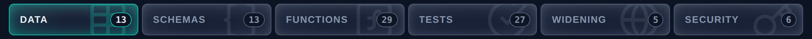
2 · Part buttons. Focus colour: the open part keeps its colour, every other button goes mono.
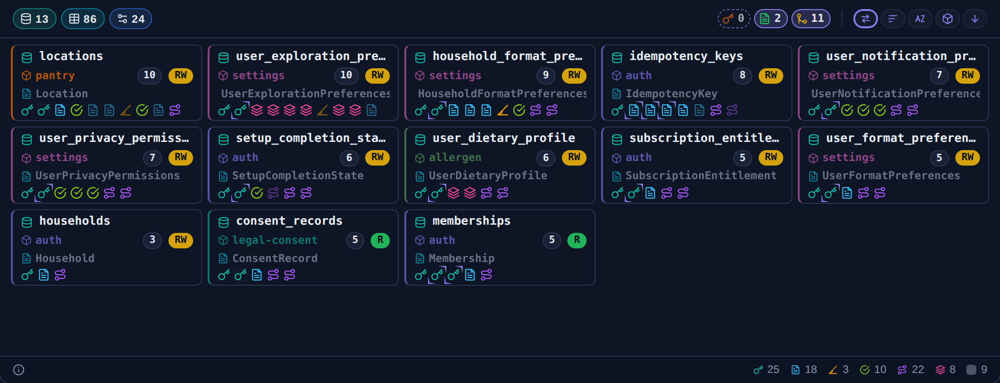
3–5 · Title row, body (Blocks) and footer row, at the operator's default.
Frame rules
A row's height is its whole box.No hidden padding: the dial sets the box, content centres, the divider sits on the edge.a fixed padding was the distance that survived hiding a divider, and it made the height bar look dead
An outline and a divider are two lines.A row can be boxed while the line under it is gone. Each has its own width and pattern.
"None" is a setting.Every line set offers none. Transparent is chosen, not missing.
Regions scroll on their own.The page never scrolls; the rail, the panel and the portrait each carry a scrollbar.a sticky rail cannot stick when it is the tallest child of its row
Placement rules
The portrait is its own panel.Beside the middle region, not a column inside it. Width 0 turns it off, and a click then opens the detail in place.
Regions never wrap under each other.The row scrolls sideways instead, because the portrait's meaning is "beside".
Degrade on purpose at the small box.At 826×264 the grounds become rows of compact tiles; nothing clips.
A container can bleed.A disc around a glyph overflows its row without growing it (fit bleed); grow is the opt-in.
Hover cards
one law, every card
The card law came from the conflict card: "this will determine a lot of things for all the other hover windows". A reader learns the order once and every card after that reads the same way.
The card law, in order
The thing and its value on one line: "declares 200", "fields 86".
The factors that decide it, as a list. Each carries its value, its threshold and a quiet note when the calculation needs saying.
This element's own facts as label–value rows. A value over 30 characters drops onto its own line.
A separator.
The plain line, once, last. Reader's side, present tense, concrete noun first, one dash for the clause that sharpens it.
What a card never does
No questions.A card states what is. "Worth asking…" lines were removed.
No fact twice.The definition under the title went; the plain line at the end is the only definition.
No feed-wide comparison.Rank, median and the heaviest doors belong one level up (cluster, entity). The card says where they went.
No stale numbers.Every number counts what is shown, so switching a channel off changes the card too.
No squeezed tables.Factors are a list, so the rules that did not fire stay readable.
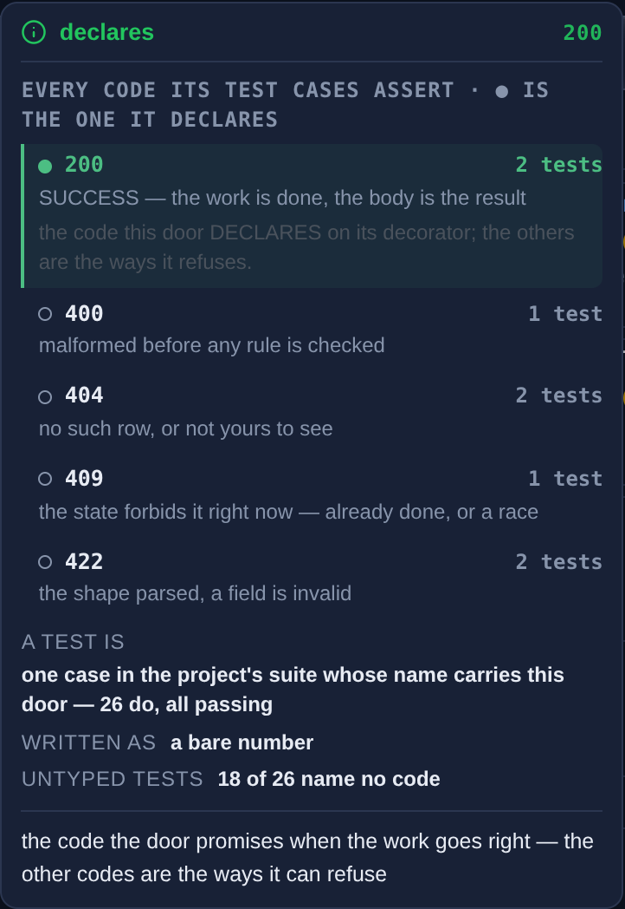
The law on the status card. Filled dot = the declared code; hollow ring = the others, still in full ink.
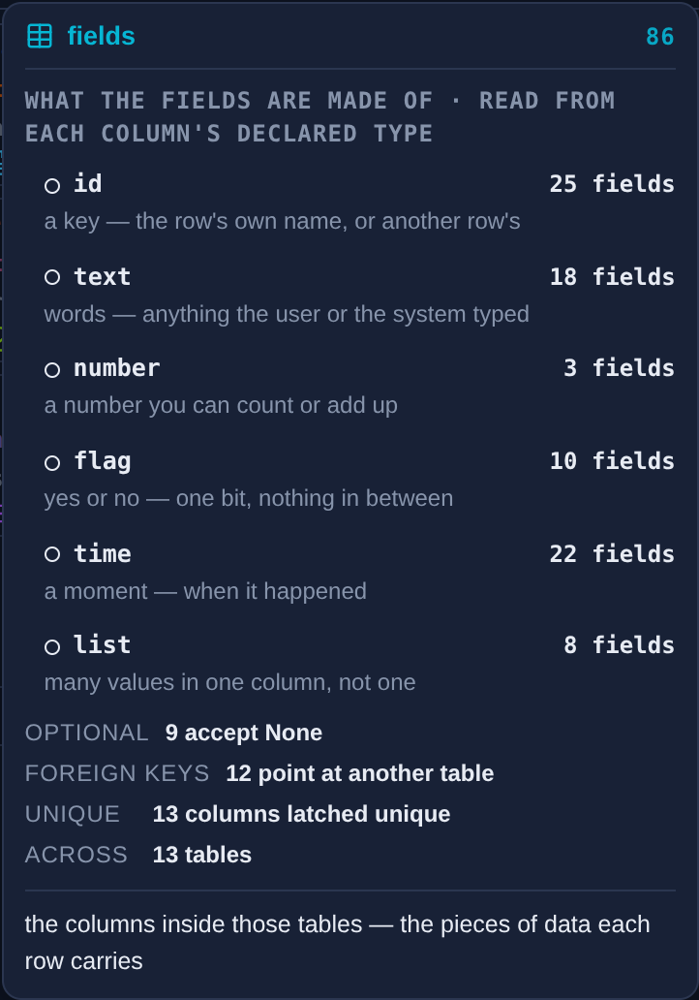
A count pill's card: the factors add back up to the pill's number.
Mirror cards — a card for a drawn thing
It mirrors the thing's look.Same glyph colour as the block title, the name in ink, the entity in its colour, the channel as the block's own chip, the count in the block's own pill, then the composition in the marks already chosen — no words. Looks are read live from the settings.
A legend card leads with the mark as drawn.Switch the encoding to characters and the time card leads with "T".
One hover per drawn element.The whole block opens one card: no dead corners, and no child with a competing card of its own.the hover helper swallows the click on anything that carries a card, so per-mark cards also made the marks unclickable
Explanations move to an info icon."The Python class that maps to this table" left the model row for an info icon at the row's end.
The footer is quiet.An info glyph and one line in the edge grey: "click to open its whole record in the portrait".
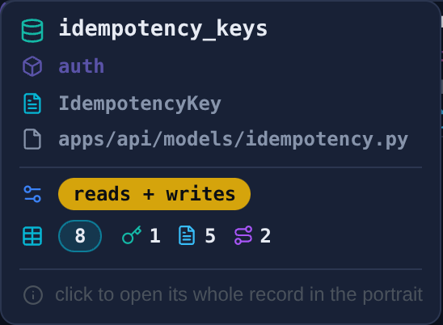
The block card mirrors the block.
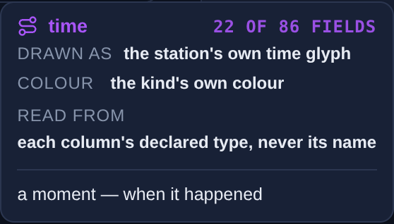
A legend card leads with the mark exactly as drawn, in its kind's colour.
Every section can be put away.Hiding is display:none on a drawn element. It stays in the page and one click brings it back.
Unused dials are drawn dashed.A section the open layout does not draw keeps its button, dashed, and its card says why it does nothing now.
The title is a section too.Title and note boot hidden at the operator's default; the counts stay.
Filters are appendable.Channels are three switches, not four exclusive buttons. All on is every table; none draws the measurement instead of a blank.
Ordering
A title is ordered lines.Each line has a left column (pushed left) and a right column (pushed right). An empty line is not drawn.
Parts are dragged, and dragging is one call.The hand and the probe use the same function, so the proof drives the path a person does.
The same shape everywhere.Head bar piles, block title lines and the footer row are all drag zones with two columns.
Every sort breaks ties by name.The same settings always draw the same picture.
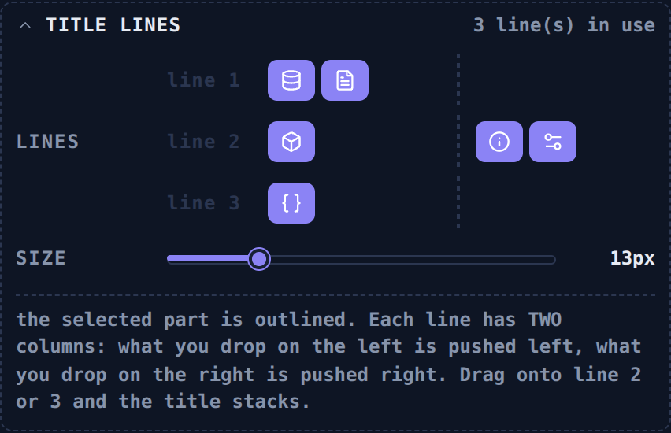
Title lines: drag a part along a line, across the divider, or onto another line.
Fitting text and tables
A name is never cut.Beside a foreign-key target, the target shrinks first; the name keeps its natural width.86.3px of text in an 86px box still ellipsised, and a 1px tolerance let it pass
Blocks never overlap.Title lines do not wrap (a long name ellipsises inside its block) and blocks stretch to their grid row.
A table with named columns is one grid.Rows borrow the table's columns (subgrid), so every row lines up under its head.rows sizing their own columns put the keys at a different x on every row
A column head never wraps.The column never goes narrower than its own head.
A long type breaks at its word boundaries.A 28-letter class name wraps between its words onto a second line — never cut, never mid-word.SetupCompleteRequest's record ran 38px past the portrait
A grid row never squeezes its block.Block rows are sized to their content and the body scrolls.26 function blocks were squeezed to 51px of their 68
The 12px floor is measured.Rendered size, not authored size. An exception is named per part, at exactly the size the operator set (the count and channel chips at 11px).
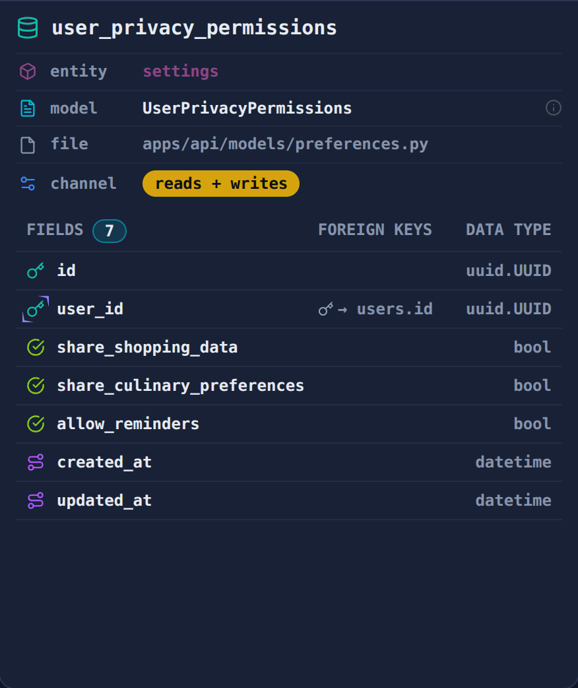
The record: icon · label · value rows, then a field table with named columns.
Controls
the rail
How the rail is organised
One named fold per thing on the panel.Layout · sections · channels · sort · count pills · pill colour · block title · block edge · title lines · field marks · footer row · grounds.
Only the group being tuned is open."I want all the controls minimized except for the one that we are working on." Open state survives a rebuild.
A closed header is a summary.It names what its dials are set to, so the folded rail still reads.
A dial lives with its part.The chip's box, fill and size sit under the Channel row of Block title, not in a group of their own.
Every block copies one line.The hover on the copy button shows the line before you click.
Shared looks are read, not copied.Schemas reads Data's pill colour, chip box/fill/size, field marks and edge, and its rail says where they are set.
A choice made alone becomes an option.Each carried-over part gets a "map" fold: what a mark is, what gets a block, which colour, shared or own looks — compared in the panel instead of ruled blind.operator: "build them all and have them as options to choose in the left panel"
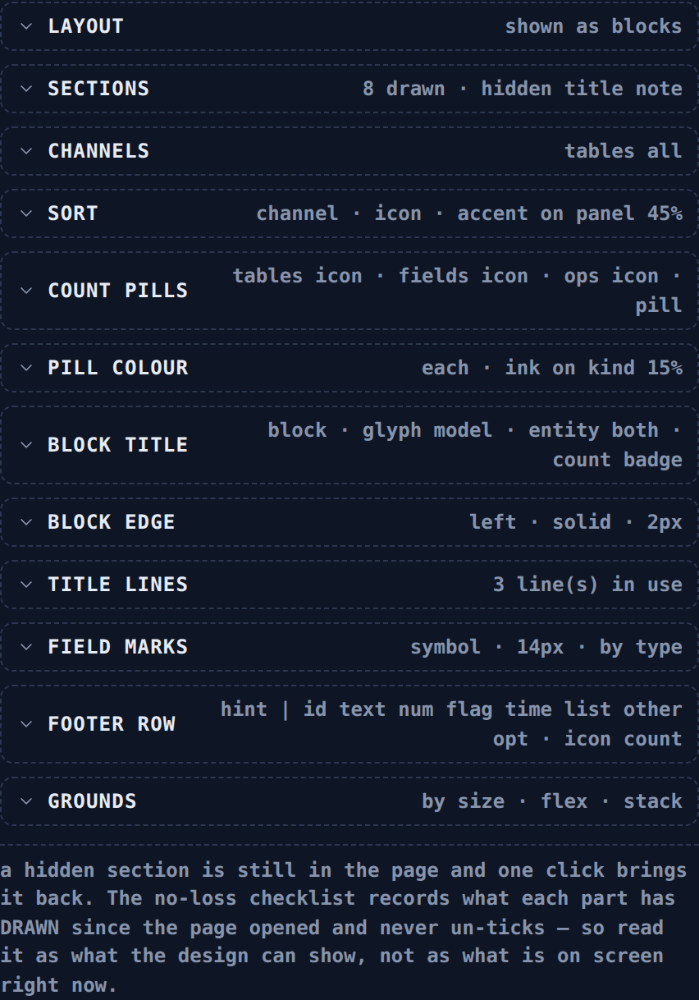
The rail at rest: twelve folds, each header a summary.
Control
Use it for
Rules
Seen in
Pick
one of a few named looks
Icon buttons; each draws what it sets; the word is on its card; a click redraws the panel.
shape · encode · edge side
Switch set
pieces that combine
Any combination. The last one on stays on — unless zero is itself a result, which then draws the measurement.
channels · footer icon/label/count
Slider
a range
Drag, click or arrow keys. The current value opens about a third along. Crossing the floor shows "<12" instead of stopping. Moves CSS variables only, so the panel never redraws mid-drag.
fill % · sizes · arm length
Multi-stop bar
several values on one scale
Anything shaped like a slider must drag. Each stop moves its own slider. Two stops on one spot: the first move decides.
field-mark opacity
Drag zones
order and placement
Lines × left/right columns. Click a part to select it; a size bar appears for it.
head bar · title lines · footer row
Dependent dials
settings that exist for one choice
Shown only while that choice is picked.
corner dials under UNIQUE MARK
Measured readout
a choice with a legibility cost
Computed from what the browser paints. The faintest case sets the verdict; one decision drives both its colour and its words.
pill contrast (WCAG)
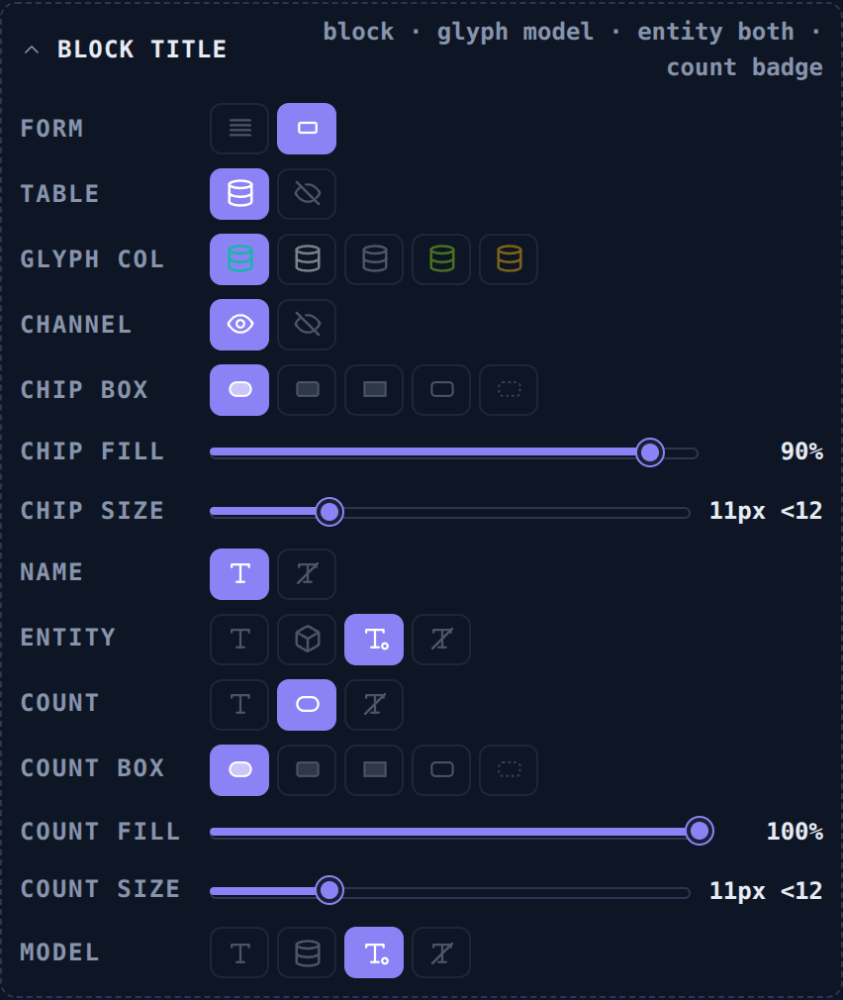
Picks and sliders. A dial sits under the row of the part it changes.
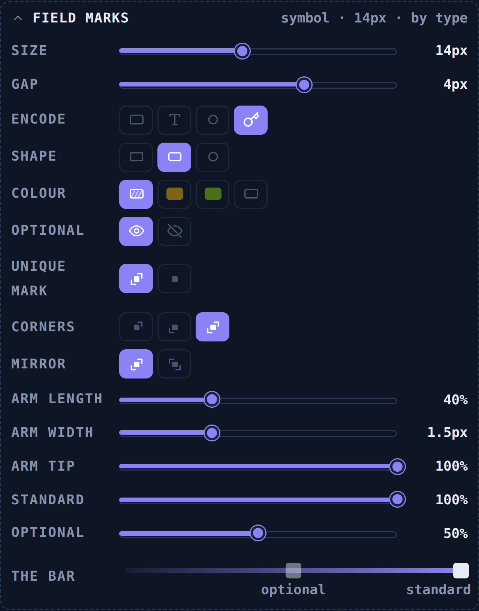
Dependent dials (corners) and the multi-stop bar.
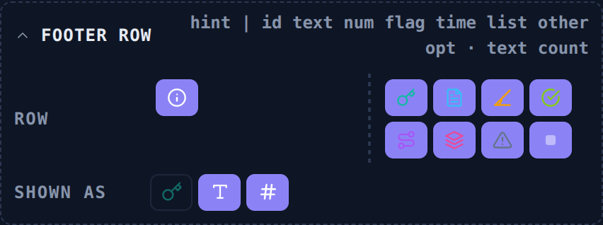
Drag zones and a switch set.
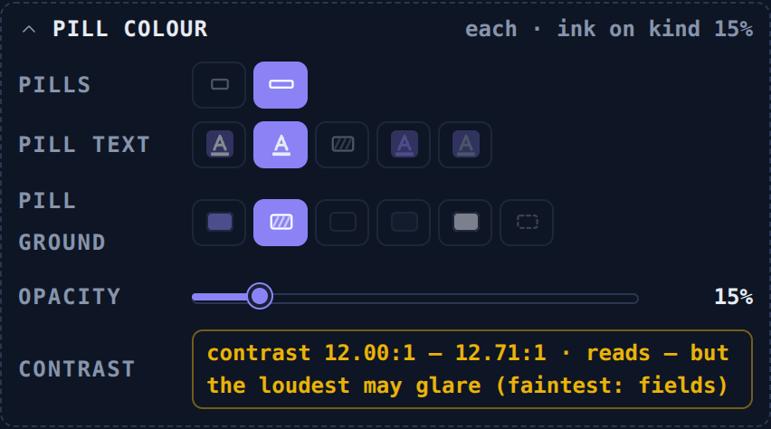
Three colour dials and the measured readout.
Density
what earns a place
Icons are the labels.Verbosity has three levels: icon (glyphs alone), value (glyph + value, the default), label (glyph + name + value, for learning the icons).
A fact appears once.The totals live in the title pills, so the footer hint dropped them. "What is inside" left the block card because the marks show it. The fields table replaced the foreign-key and unique rows in the record.
Counts are pills with cards.Each pill's card lists the factors that add up to its number.
Composition is drawn, not written.A block card shows 🔑 1 · 📄 5 · ⌁ 2 as marks with numbers, not "1 id, 5 text, 2 time".
Hints are one grey phrasebehind an info glyph, with no bold lead-in and no white half.
Settled things fold or hide.Title and note boot hidden; settled dial groups fold; lab controls never sit on the panel.
An honest floor is said where it matters."The channel is the table's — the feed never records which column was written" is said once, on the fields view.
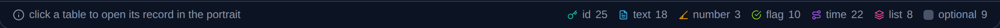
Footer with icon · label · count.
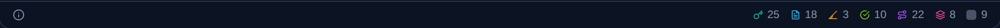
The operator's default: icon · count. The hint shrinks to its glyph.
Fields
the pieces inside a thing
A field's kind is read from its declared type, never guessed from its name. Anything unmatched is called "other" out loud.
Kind
Declared as
Character
Shape
Colour
id
uuid.UUID
#
circle
model #14b8a6
text
str · Text · EmailStr
A
square
route #38bdf8
number
int · float · Decimal
1
diamond
schema op #f59f00
flag
bool
Y
triangle
entity #84cc16
time
datetime · date
T
ring
screen #a855f7
list
list · dict · JSON
≡
bars
store #ec4899
other
anything else
?
cross
type #64748b
Drawing a field
Four encodings, one dial.Colour, character, shape or the station's symbol (the default).
The colour rule is its own dial.By kind, by channel, by entity or mono. Shape, character and symbol still carry the kind in mono, which is the only encoding a reader with no colour vision can follow.
One mark function draws a field everywhere.Blocks, lists, the record, the cards and the footer, so an encoding cannot land in one view and miss another.
Size and gap are sliders.Default 14px, gap 4px, rounded.
Marking a field
Opacity has two stops.Optional 50%, standard 100%. Unique does not use opacity.
Unique is marked by its corners, or not at all.Which corners (top-right · bottom-left · both), mirror, arm length, arm width at the corner, arm tip. Default: both, 40%, 1.5px, tip 10%.
Foreign keys read both ways."→ table.column" where it points (the feed's key) and "⇤ N" for how many point at it (derived from the tables this door touches, and the card says so).
A field table has three named columns:fields (with the count) · foreign keys · data type.
Never tint a name to mark it.Use a shape or a column instead.the external grey made a foreign key's name read dimmer than a plain field
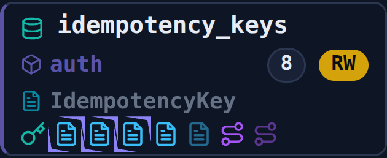
Unique corners with a long, tapering arm (length 70%, width 2px, tip 0%).
Icons
what a glyph promises
Lifted, never retyped.gen-station-tokens.py copies the station's glyphs, palettes and card chrome, so a station recolour reaches the lab on the next run.
A glyph names the thing.A table is the graph's model drum, not the Data button's grid icon.the grid was the part's icon, so a table read as "the Data tab"
One kind, one colour.The table glyph's colour is a setting (default: the model colour), so one kind of thing does not look like six.
The info glyph means "an explanation is here".On hints, at the end of a record row, in a card's footer.
A control button draws what it sets.Line patterns draw their line, box presets draw their shape to scale, corner buttons draw their L's.
On a selected button the icon takes the button's ink.accent strokes on an accent-filled button vanished, leaving only a square
Dots have one language.filled = the one that fires or is declared · hollow = the rest, still readable.
Colour
one meaning per colour
Each colour carries one kind of information. When a new panel needs a colour, it takes a free channel instead of reusing one that already means something.
Colour
Carries
Where
Rule
entity colour
which entity claims it
block edge · entity glyph and word
The edge is a setting: one side, a pattern, 1–8px.
RWRW
read · write · both
channel chips · filter switches
Dark letters on the chip; under 50% fill the letters take the chip colour.
kind colours
what a field holds
field marks · footer · fields card
Its own dial; mono must still read.
accent
selection and focus
selected block · active sort ring · open part · unique corners
Never data.
muted grey
secondary words
hints · labels · rail summaries · card footers
A hint is one grey phrase.
red
a rule that fires
risk glyph and card
A filled dot on the firing factor only.
green
the declared case
status card
A filled dot and the word SUCCESS.
How sure the map is
dashed — inferred
hatched — unmeasured
hollow — measured zero, a result rather than a gap
optional's pale mark is not one of these three, so it never borrows dashed, hatched or hollow
Colour you can dial
Text, ground and opacity are three dials.One rule that only moved the text made accent on accent: 1.00:1, blank pills.
Contrast is measured, then shown.The station's own default chip, white on accent, measures 3.15:1, below the 4.5 reading floor.
An inline colour cannot be dialled.Colours arrive as CSS variables (--rwc, --k) so a stylesheet rule can reach them.
Carry it over
schemas · functions · tests · widening · security
One region, one loop
The operator names a region; its rail group opens and the rest fold.
Build the dials. Every value a dial moves is a CSS variable, and a dragged bar never rebuilds the rail.
The operator tunes and pastes the copy line back. That line becomes the boot state, and the probe pins it word for word.
Measure the drawn result: computed styles, natural text width with no slack, pixels diffed against a baseline.
Prove each new check can fail: force the old look back and require the check to fire.
Commit the step with its probe count; check the git head before and after.
Traps we paid for
Lifted CSS brings its class names.A new .cpfr inherited the station's display:flex; renamed to .fct.
A redraw allow-list silently kills new dials.Every dial that changes the picture redraws it.
A flex gap leaks into a subgridas a constant 3px shift.
Two handles on one spot are one target.
A probe section picks its own layout.Earlier sections leave a part on whatever they clicked last.
A rail's CSS fenced to one idleaves the next rail unstyled — widen the selector instead of copying the rules.
Boot state is pinned before the first click,and old tests set their own baseline instead of trusting the defaults.
A shared closing line fools text surgery.Search from the start marker; refuse to write while an old reference survives.
Checklist for the next panel, in order
Inventory. List what the station card shows today for this part: nothing on it may be lost, and a hover card counts.
Name the things and their pieces. For Data, the thing was a table and the piece was a field. Decide both before drawing.
Make every choice an option. What a mark is, what gets a block, which colour, whose look — each goes into the part's "map" fold, so the operator compares them in the panel.
Title row. Count pills with factor cards on the left; appendable filters, a divider and a sort on the right.
Blocks. One block per thing: a title as ordered lines of parts, then its pieces as marks read from declared facts.
Cards. One hover per drawn thing, on the card law; the thing's card mirrors its block.
Footer row. The hint as an info glyph and one grey phrase; the legend as icon · count switches.
Portrait. A record for the selected thing: icon · label · value rows, then a pieces table with named columns.
Rail. A named fold per region, one open, summaries on the headers, a copy line.
Colour map. Say which channel each colour carries before using it; accent stays for selection.
Probe. The boot line word for word, the card order, no cut names, no wrapped heads, the 12px floor, and a forced failure for each new check.
Proposal, not yet ruled: how the thing and its pieces could map for each part. The operator confirms each row when that panel opens.
Part
The thing (a block)
Its pieces (marks)
Count pills
Filter like channels
Schemas · built 13 Sep
a shape — each body and every shape nested in it (13)
fields; a field typed as another shape wears the shape mark
shapes · fields · nested
IN · OUT (request green · response orange)
Functions · built 13 Sep
a function — the handler at L0 and the 25 the walk reaches
tables it reads or writes, or functions it calls (an option)
functions · levels · commits
roles: accessor · caller · gate · pure
Tests
a test case
the status codes it asserts
tests · codes · journeys
by asserted code
Widening
a rung: hook, screen, route
the pieces on that rung
screens · hooks · routes
by frontend kind
Security
a gate or dependency
the checks it runs
deps · walls · lanes
by layer
Not generalised yet
The portrait's Shape, Wheel and Keys viewshave not taken the record's table or the new marks.
The middle panel's field lists(Fields view, an opened block) still use the older row, not the three-column table.
The head bar and part buttonspredate the fold rail; their dials follow the older block layout.
Schemas took the pattern on 13 Sep— blocks, cards, footer, record and rail folds — and wears Data's looks until the operator tunes it.
Functions took it the same dayand is built from the rail kit (named folds, picks, switches, sliders, title lines, footer switches, own-look dials). Schemas' rail predates the kit and is owed the same fold-in.